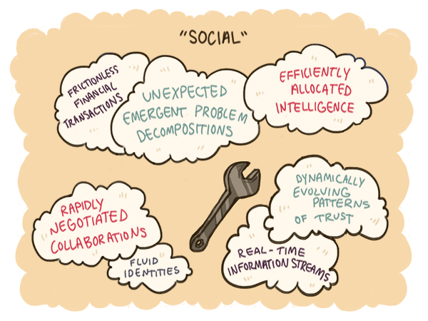
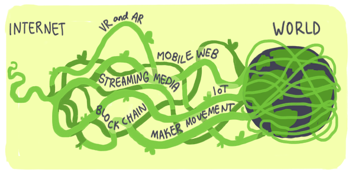
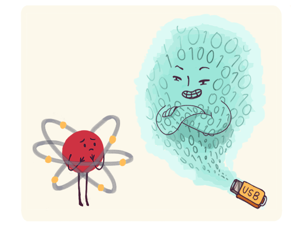
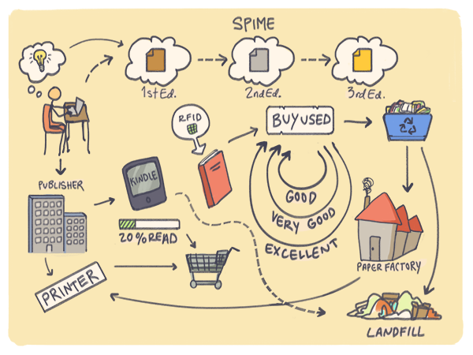

Les bits sont immortels
En 2015, on peut affirmer avec certitude que des approches de résolution de problèmes qui avaient pu sembler étranges en leur temps, comme SETI@home ou le partage de lolcats1, sont devenues des pratiques courantes dans tous les domaines.{kind=link}

Aujourd’hui, quand on a besoin d’intelligence humaine et de puissance de calcul pour résoudre des problèmes complexes, c’est de ne pas utiliser l’informatique distribuée qui paraît surprenant. Il n’est même plus nécessaire de parler de médias sociaux : même en l’absence de facteur humain, résoudre des problèmes sur cet ordinateur planétaire implique presque toujours des mécanismes sociaux. Pour résoudre un problème, on retrouve souvent les mêmes éléments « sociaux » dans la solution proposée, quels que soient les différents niveaux d’implication respectifs du facteur humain, du logiciel ou de la robotique : les flux d’information en temps réel, les réseaux de confiance dynamiques, les identités à géométrie variable, les collaborations rapidement négociées, les analyses surprenantes des problèmes émergents, l’allocation efficace de l’intelligence et les transactions financières fluidifiées. Chaque problème résolu en utilisant ces éléments renforce le monde connecté. Ces outils de résolution de problème s’imposent comme une normalité nouvelle et se renforcent plus on les utilise. C’est ce qui fait que les fondements technologiques de notre planète évoluent aussi rapidement. En réalité, il s’agit d’un processus continu et rampant et non d’une évolution discrète2 ou en paliers comme des expressions telles que Web 2.0 et Web 3.03 pourraient le laisser croire, ne reflétant que des tentatives d’explication de ce phénomène en termes industriels. Des branches nouvelles qui viennent d’apparaître ont déjà été identifiées et baptisées : le Web mobile, l’internet des objets (IoT4), le streaming, la réalité virtuelle (VR) ou la réalité augmentée (AR) et la blockchain. D’autres vont apparaître en grand nombre, ce qui rendra encore plus ténue la frontière entre réel et virtuel.{kind=link}

Conséquence surprenante, le logiciel dévore le monde jusque dans l’industrie informatique elle-même : dans ce changement en marche, les caractéristiques des matériels nécessaires importent peu. Aujourd’hui, en dehors des applications les plus exigeantes, les données, les programmes et le réseau sont tous largement indépendants du matériel. The Internet Wayback Machine5, un service développé par Brewster Khale et Bruce Gilliat en 1996, a déjà archivé l’histoire du web qui a traversé plusieurs générations de machines. Bien que de tels efforts puissent parfois sembler en totale inadéquation avec les conceptions pastoralistes concernant la préservation des traces historiques, il est important de reconnaître l’incroyable avancée qu’ils représentent par rapport à la conservation de notre mémoire collective sur papier. La baisse drastique des coûts de stockage et la modernisation permanente des matériels dans les data centers permettent aux grandes entreprises d’archiver indéfiniment toutes les données qu’elles génèrent. Bientôt il sera même moins cher de les conserver que de décider quoi en faire, en temps réel, ce qui constitue la définition du big data dans le monde des affaires6. Pour chacun d’entre nous, des services de stockage en ligne comme Dropbox permettent de faire passer les données personnelles d’une machine à une autre très facilement. Contrairement à ce qui se faisait il y a cinquante ans, la majorité des programmes écrits aujourd’hui utilisent des langages de haut niveau et non plus des langages de bas niveau spécifiques à chaque machine. Depuis la généralisation de la virtualisation (une technologie marginale jusque dans les années 20007, qui permet à un ordinateur d’en émuler un autre), la plupart des services en ligne ne tournent plus directement sur des machines mais dans des machines virtuelles et des « conteneurs ». Dans le monde du transport, la généralisation des conteneurs a permis de multiplier par sept les échanges commerciaux internationaux en vingt ans8. L’utilisation de conteneurs logiciels aura un rôle encore plus important dans l’économie du logiciel. Aujourd’hui, les réseaux sont eux aussi avant tout contrôlés par des logiciels. Il ne s’agit pas seulement de réseaux virtuels éphémères de très haut niveau définis par des hashtags. Les couches basses des réseaux peuvent également perdurer au gré de l’évolution des routeurs et des liens physiques : ADSL, fibre optique ou liaisons satellites. Grâce à des technologies émergentes telles que le software-defined networking (SDN), des fonctions habituellement effectuées par des matériels le sont de plus en plus par des logiciels. Autrement dit, on ne fait pas que vivre sur une planète connectée. Nous vivons sur une planète connectée par le logiciel, un petit détail qui fait toute la différence. La planète connectée par le logiciel peut exister de façon cohérente et continue en dépit des changements matériels, exactement comme nous autres humains restons nous-mêmes bien que nos cellules se renouvellent totalement en quelques années. C’est un changement majeur. On avait l’habitude de penser que les atomes duraient et que les bits étaient éphémères, mais c’est bien l’inverse qui est vrai aujourd’hui.{kind=link}

L’ordinateur planétaire qui est en train d’émerger conserve une identité et une mémoire en évolution constante indépendamment de l’évolution des matériels au cours du temps, qu’il s’agisse d’ordinateurs traditionnels ou neuronaux. Comme la monnaie et l’écriture, le logiciel ne dépend du matériel qu’à court terme, pas à long terme. Comme le dollar ou les pièces de Shakespeare, le logiciel et les réseaux logiciels perdurent quels que soient les changements des technologies physiques sous-jacentes. Au contraire, conserver de vieux matériels est compliqué, même dans des musées. Quand le logiciel dévore le matériel, cependant, il est toujours possible de recréer le matériel à la demande, des bits immortels faisant revivre des atomes éphémères. Prenons un exemple : constituée au XIXe siècle, la collection Realeaux est un ensemble inestimable de dispositifs mécaniques. En mettant les modèles à dispositions, l’université Cornell9 permet à tous les étudiants de les imprimer en 3D et de les étudier. A un autre niveau, c’est ce qu’a fait la NASA en recréant les anciens moteurs de fusée Saturn V des années 197010. Au cours de ce projet compliqué, on a utilisé des scanners 3D à lumière structurée afin de disposer de modèles numériques précis, qui ont servi de base à un design modernisé. Cette capacité de résurrection est également possible pour les ordinateurs eux-mêmes. En 1997, une équipe de recherche de l’université de Pennsylvanie dirigée par Jan Van der Spiegel a utilisé des logiciels modernes pour recréer l’ENIAC, le premier ordinateur électronique, sur une puce de 8mm de côté. La conséquence de telles possibilités est que le concept d’obsolescence du matériel devient lui-même obsolète. Dans un monde d’abondance numérique, une évolution rapide n’empêche pas pour autant la persistance du passé. Le potentiel de la réalité virtuelle et de la réalité augmentée est certainement encore plus important et ce potentiel va bien au-delà de produits grand public tels que l’Oculus Rift, la technologie de Magic Leap, le casque Hololens de Microsoft et le capteur de mouvements 3D Leap. Le plus intéressant dans toute cette histoire est que la capacité de production va se démocratiser. A l’époque où les technologies de capture de mouvement et les images de synthèse étaient extrêmement coûteuses, seules quelques majors hollywoodiennes à gros budget et quelques éditeurs de jeux vidéo pouvaient se permettre de produire de la réalité artificielle. Aujourd’hui, grâce à des technologies comme Photosynth de Microsoft (qui permet de faire des captures 3D avec un smartphone), SketchUp (un moteur de modélisation 3D très puissant), Warehouse (une bibliothèque publique d’objets 3D virtuels), Unity (un outil de conception de jeux) et des logiciels de capture en 3D comme Trimensional, il devient possible à n’importe qui de créer des documents historiques vivants ou d’habiter dans des mondes imaginaires construits en réalité virtuelle. Le « holodeck » de Star Trek est presque devenu une réalité : le monde qui nous entoure peut continuer à vivre sous une forme numérique longtemps après avoir quitté la réalité du monde physique. Voilà bien plus que des jouets à la mode. Ces outils technologiques numériques ont une importance politique majeure. Grâce au logiciel, l’archivage peut prendre des formes qui vont bien au-delà de l’écrit. En 1964, seules les équipes des « trois grandes chaînes »11 de télévision américaines étaient capables de filmer les manifestations du mouvement pour les droits civiques, faisant de leur version des choses la seule disponible pour l’Histoire. D’ailleurs, une chanson s’inspirant de ce mouvement s’intitulait, fort à propos, This revolution will not be televised12. En 1991, armé de son caméscope, un témoin anonyme a filmé le passage à tabac de Rodney King qui a déclenché les émeutes de Los Angeles. Faisons un bond en avant de quinze ans. En 2014, les smartphones ont filmé le moindre détail de toutes les péripéties entourant la mort de Michael Brown à Ferguson et des milliers de caméras venaient contrebalancer le point de vue proposé par les principales chaînes. Dans un rare mouvement de consensus, les activistes libertariens, qu’ils soient de droite ou de gauche, ont commencé à exiger que les agents et les véhicules de police soient équipés de caméras automatiques non débrayables. A peu près au même moment, le directeur du FBI a dû faire la tournée des médias pour essayer d’endiguer l’utilisation d’outils de chiffrement à même de limiter les activités de surveillance policière. Une année à peine après les révélations concernant les activités de surveillance massive de la NSA, la parade était déjà presque trouvée. Bientôt, n’importe qui assistant à n’importe quel fait-divers d’importance pourra l’enregistrer et le partager pour faire valoir son point de vue in extenso ; ce n’est qu’une question de temps. Et cela pourrait même former des archives collectives en 3D aussi vraies que nature, qu’il serait beaucoup plus difficile à quiconque de manipuler avec malveillance. Bref, l’Histoire n’a plus besoin d’être écrite par les vainqueurs. Même les Etats autoritaires trouvent les possibilités de surveillance du monde connecté ambivalentes. En 2014, pendant les manifestations #Occupy à Hong Kong, les images prises par des drones ont permis aux agences de presse de procéder à leurs propres estimations du nombre de manifestants13, dont le gouvernement ne pouvait plus alors minimiser l’ampleur. Bien qu’originellement utilisé pour guider les actions au sol, le logiciel avait également pris la voie des airs pour écrire l’Histoire. Quand le logiciel dévore l’Histoire de cette façon, comme il est en train de le faire, c’est la capacité à oublier14 et non plus la capacité à se souvenir qui devient un enjeu politique, culturel et économique. Quand les bits commencent à prendre le pas sur les atomes, penser que les mondes virtuel et physique sont deux sphères distinctes de l’existence humaine n’a plus aucun sens. De même, penser que le monde humain – social – et le monde des machines – non social – sont distincts n’a plus aucun sens non plus. Quand le logiciel dévore le monde, les « médias sociaux » mêlant des éléments humains et matériels deviennent Internet tout entier, et Internet à son tour devient le monde entier. Dans cette fusion du numérique et du physique, c’est le numérique qui prend le dessus. Penser que le monde en ligne est différent et dépendant du monde réel (ce qu’on appelle le dualisme numérique, qui constitue le prétexte de films aussi divertissants que trompeurs tels que Tron et Matrix) est une idée fausse qui cède le pas devant Internet pris comme un référentiel différent pour expérimenter toute la réalité, y compris l’ancien référentiel : la géographie. En proposant le concept de « spimes » (des objets digitaux persistants qui peuvent se matérialiser sous forme d’objets physiques dont l’aspect peut changer en fonction du contexte), l’auteur de science-fiction Bruce Sterling a parfaitement résumé l’idée que les bits dominent les atomes. Un livre, par exemple, n’est plus un objet en papier mais un spime : un master15 numérique qui peut évoluer indéfiniment et perdurer au-delà des différentes formes physiques qu’il peut prendre.{kind=link}

A un niveau plus conceptuel, un « voyage » devient un spime qu’on peut vivre à son gré grâce à des véhicules physiques spécifiques ou des technologies de téléprésence. Un « journal télévisé » devient un spime abstrait qui peut être tourné par une équipe classique de télévision se déplaçant sur le terrain ou bien par une citoyenne lambda diffusant en direct ce dont elle est témoin, des images prises par un drone ou même par un flux de vidéosurveillance publique que des hackers se seront procuré. Les spimes, en fait, matérialisent l’essence même du bidouillage : concrétiser une idée en utilisant tout ce qui est bon marché ou librement disponible et non pas des ressources dédiées contrôlées par des entités autoritaires. Cette aptitude met en lumière l’importance économique du fait que les bits dominent les atomes. Quand la valeur d’une ressource physique est une fonction du degré d’ouverture et de partage permis par le logiciel, elle est moins sujette à controverses. Quand, au contraire, les atomes l’emportent sur les bits, la plupart des ressources sont, par définition, ce que les économistes appellent des biens rivaux : si je l’ai, vous ne l’avez pas. De telles ressources captives sont limitées par l’imagination et les objectifs d’une seule partie prenante. La part de la bande hertzienne attribuée à chaque chaîne de télévision constitue un bon exemple. Au contraire, des ressources ouvertes à tous en toute connaissance de cause, comme Twitter, ne sont limitées que par l’ingéniosité technique collective. La rivalité des biens devient donc une fonction de la part de logiciel et d’imagination mise à profit pour en tirer le maximum, individuellement ou collectivement. Quand le logiciel dévore l’économie, la prétendue « économie du partage » devient l’économie toute entière. La location l’emporte sur la propriété et devient le moteur par défaut de la consommation. Le fait que tout cela dérive de mécanismes « sociaux » de résolution de problèmes sous-entend que le sens même du mot a changé. Comme le sociologue Bruno Latour l’a proposé, le sens de « social » ne s’applique plus seulement à l’homme. Il s’étend aux idées et aux objets plus ou moins connectés en réseaux grâce au logiciel. Au lieu d’être des pièces rapportées, la technologie et l’innovation font maintenant partie intégrante de ce qu’être social veut dire. Ce qui se déroule sous nos yeux est une mise à jour du matériel et du logiciel qui va toucher toutes les facettes de notre société. Dans son principe, ce n’est pas très différent de ce que nous faisons quand nous achetons un nouveau smartphone : on y copie la musique, les photos, les données et les contacts. Et tout comme un nouveau smartphone, notre nouvel ordinateur planétaire dispose de nouvelles capacités aussi puissantes que surprenantes. Des possibilités qui questionnent notre capacité d’adaptation. Et de toutes les possibilités d’adaptation possibles, la plus importante est l’adaptation de notre manière de résoudre les problèmes. C’est la deuxième histoire dans l’histoire de notre conte des deux ordinateurs. Partout où les bits commencent à dominer les atomes, on résout les problèmes différemment. Au lieu de définir et de poursuivre des objectifs, nous créons et profitons de la chance.[1] Les lolcats sont des photos humoristiques de chats (ndt). [2] L’adjectif discret est à prendre ici dans son sens mathématique, par opposition à continu : une suite discrète de points, par exemple (ndt). [3] Chercher à comprendre l’évolution de l’informatique comme une succession d’étapes est une tentation qui remonte à l’idée de générations en informatique. L’ère du tube à vide, celle du mainframe, puis celle de l’ordinateur personnel sont généralement considérées comme les quatre premières générations. Cette approche devient caduque avec l’échec de l’informatique de « cinquième génération » au Japon, qui se concentrait sur l’intelligence artificielle puis avec l’émergence des réseaux qui sont l’incontournable de l’informatique réseau. [4] On trouve également couramment la version anglaise de cet acronyme : IoT pour Internet of Things (ndt). [5] Au moment où nous écrivons ces pages, le site https://archive.org/web/ contient 435 milliards de pages web. [6] Cette définition du big data est de George Dyson. [7] En 1999 VMWare a publié le premier moteur de virtualisation digne de ce nom pour les processeurs x86, qui font tourner la plupart des ordinateurs portables et des serveurs. C’est ce qui a permis l’arrivée des services de cloud computing. Aujourd’hui presque tous les programmes sont intégrés dans des containers et prévus pour fonctionner soit sur des machines virtuelles qui émulent simplement des ordinateurs soit sur des conteneurs plus légers et plus spécialisés comme Docker. La virtualisation est tellement au point qu’aujourd’hui on peut émuler les processeurs x86 directement à l’intérieur d’un browser. Des technologies plus avancées comme le microvisor de Bromium permettent aujourd’hui de créer des machines virtuelles pour n’exécuter qu’une seule ligne de code. La virtualisation n’est pas qu’un heureux hasard de l’Histoire, c’est la pierre angulaire qui va permettre au logiciel de continuer à évoluer en toute quiétude. [8] Voir Daniel M. Bernhofen et al., « Estimating the Effects of the Container Revolution on World Trade », Feb 2013, CESifo Working Paper Series No. 4136. [9] Voir la collection Kmoddl de l’université Cornell : http://kmoddl.library.cornell.edu/model.php [10] Voir cet article d’Ars Technica de 2013 : http://arstechnica.com/science/2013/04/how-nasa-brought-the-monstrous-f-1-moon-rocket-back-to-life/ [11] On désigne par « trois grandes » les chaînes ABC, CBS et NBC (ndt). [12] Litt. « Cette révolution ne passera pas à la télévision ». Il s’agit d’une chanson de Gil Scot-Heron (1949-2011) parue en 1971, au moment du mouvement Blaxploitation (ndt). [13] Voir http://mashable.com/2014/09/28/hong-kong-protest-drone-video/ [14] Depuis 2012, il existe une proposition de régulation de l’Union européenne concernant la protection des données personnelles qui intègre la notion de droit à l’oubli. L’Argentine dispose également d’une loi d’oubli (ndt). [15] A prendre ici au sens d’original, comme c’est le cas dans l’industrie audio-visuelle (ndt).